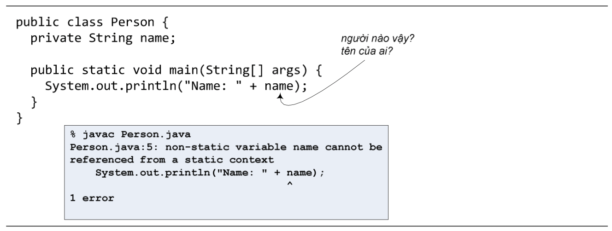
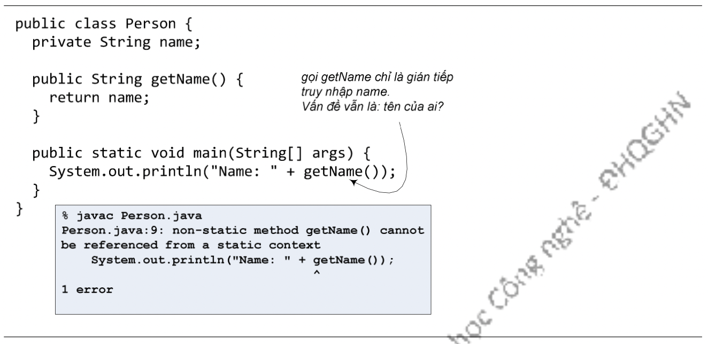

Đặc điểm về tính độc lập đó vừa là ưu điểm vừa là giới hạn cho hoạt động của các phương thức lớp.
Không được gắn với một đối tượng nào, nên các phương thức static của một lớp chạy mà không biết một chút gì về bất cứ đối tượng cụ thể nào của lớp đó. Như đã thấy trong ví dụ Hình 10.2, getCount() chạy ngay cả khi không tồn tại bất cứ đối tượng Cow nào. Kể cả khi gọi getCount() từ tham chiếu c2 thì getCount() cũng vẫn không biết gì về đối tượng Cow mà c2 đang chiếu tới. Vì khi đó, trình biên dịch chỉ dùng kiểu khai báo của c2 để xác định nên chạy getCount() của lớp nào, nó không quan tâm c2 đang chiếu tới đối tượng nào. Cow.getCount() hay c2.getCount() chỉ là hai cách gọi phương thức, và với cách nào thì getCount() cũng vẫn là một phương thức static.
Hình 10.3: Phương thức lớp không thể truy nhập biến thực thể.
Nếu một biến thực thể được dùng đến trong một phương thức lớp, trình biên dịch sẽ không hiểu ta đang nói đến biến thực thể của đối tượng nào, bất kể trong heap đang có 10 hay chỉ có duy nhất một đối tượng thuộc lớp đó. Ví dụ, chương trình trong Hình 10.3 bị lỗi biên dịch vì phương thức main() cố truy nhập biến name. Do main() là phương thức static, trình biên dịch không hiểu name mà main() đang nói đến là biến thực thể name của đối tượng nào. Lời thông báo lỗi có nội dung: biến thực thể name không thể được gọi đến từ một ngữ cảnh static. Ta dễ thấy rằng tham chiếu this cũng không thể sử dụng trong một phương thức lớp, bởi nó không hiểu đối tượng 'này' là đối tượng nào.
Hiệu ứng dây chuyền của việc các phương thức static không thể dùng biến thực thể là chúng cũng không thể gọi đến các phương thức thực thể (phương thức thường) của lớp đó. Các phương thức thực thể được quyền dùng biến thực thể, gọi đến các phương thức thực thể đồng nghĩa với việc gián tiếp sử dụng biến thực thể.
Hình 10.4: Phương thức lớp không thể gọi phương thức thực thể.
Ví dụ trong Hình 10.4 cũng gặp lỗi tương tự lỗi biên dịch trong Hình 10.3.
Nhìn qua thì có vẻ như nội dung từ đầu chương đến đây là một loạt các quy tắc của ngôn ngữ Java mà lập trình viên cần nhớ. Nhưng thực ra thì tất cả chỉ là hệ quả của bản chất khái niệm: Thành viên lớp thuộc về lớp và độc lập với tất cả các thực thể của lớp đó. Trong khi đó, thành viên thực thể gắn bó chặt chẽ với từng thực thể cụ thể. Tất cả các 'quy tắc' đều là hệ quả của đặc điểm bản chất đó.
Một phương thức thực thể có thể truy nhập các biến thực thể chẳng qua vì chúng thuộc về cùng một thực thể - đối tượng chủ mà tham chiếu this chiếu tới. Ví dụ, lệnh return name; trong phương thức getName() tại Hình 10.2 thực chất là return this.name;. getName() là phương thức thực thể nên nó có tham chiếu this để sử dụng cho việc này.
Một phương thức lớp, trái lại, không thể truy nhập thẳng đến biến thực thể hay phương thức thực thể đơn giản là vì phương thức lớp không hề biết đến đối tượng chủ của các thành viên thực thể kia. Ví dụ, khi biến thực thể name được truy nhập tại phương thức main tại Hình 10.3, thực chất Java hiểu đó là this.name. Nhưng main là phương thức lớp, nó không gắn với đối tượng nào nên không có tham chiếu this để có thể gọi this.name.
Tất cả quy tắc đều được dẫn xuất từ bản chất của khái niệm. Do đó, thực ra ta không cần nhớ quy tắc một khi đã nắm vững được khái niệm.